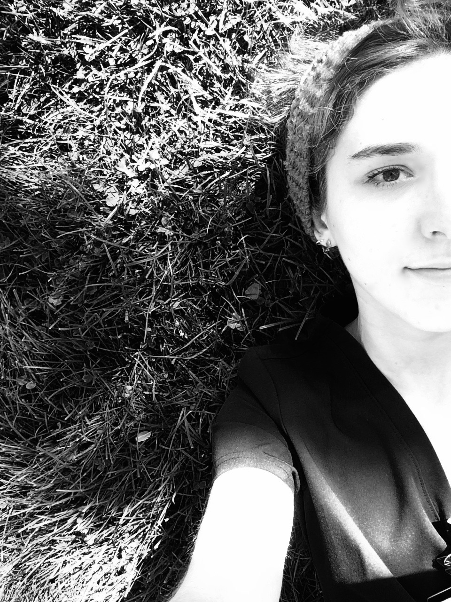

 Neva Wood
About Me
I have changed directions several times. I recently left Providence on Glisan where I was a professional vampire to program. Before that I did honors research in neuroscience at PSU and presented my findings in Germany. I have always dabbled in trying to program - however I lacked the kind of people around me that might've been helpful and I tend to be better at focusing when I am not working full time and have incentive outside of myself. I have a dozen ideas for programs, apps, and changing things that will have to be listed another day.